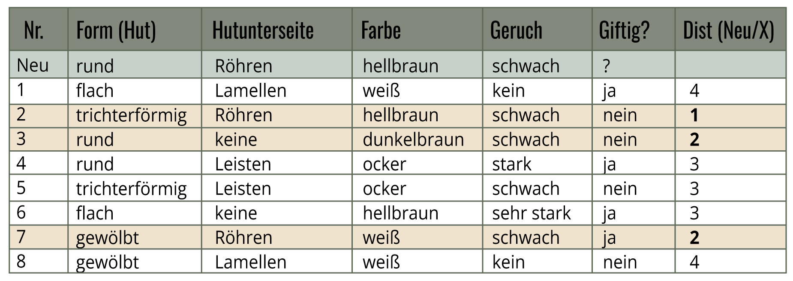

K-Nearest Neighbor-Verfahren
Gegeben sind die folgenden Datensätze zur Klassifizierung von Pilzen in giftig und ungiftig. Ein neuer Pilzdatensatz soll nun eingeordnet werden. Berechne nun dafür zuerst die Distanz zwischen dem neuen Datensatz und jedem der vorhandenen Datensätze. Trage die berechneten Distanzen in die letzte Spalte der Tabelle ein.
Fülle die Tabelle aus



Klassifiziere den neuen Datensatz mit dem K-Nearest-Neighbor-Verfahren mit K = 3.
giftig
nicht giftig
Würdest du den neuen Pilz auf der Grundlage der hier vorliegenden Informationen essen?
essen
nicht essen.